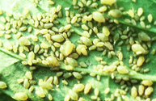

| Home |
| MUSTARD |
| 1. Mustard aphid |
| 2. painted bug |
| 3. mustard sawfly |
| 4. green peach aphid |
| 5. pea leaf-Miner |
| 6. Bihar hairy caterpiller |
| 7. Cabbage butterfly |
| 8. diamondback moth |
| questions |
| Download Notes |
PESTS OF MUSTARD (Brassica) :: Major Pests :: Mustard Aphid
1. Mustard Aphid: Lipaphis erysimi (Aphididae:Hemiptera)
Distribution and status: Distributed worldwide and is a serious pest
Host range: Cruciferous oilseeds like toria, sarson, raya, taramira and Brassica vegetables like cabbage, cauliflower, knol-khol,.
Bionomics: They are louse like, pale-greenish insects abundant from December to March. During summer, it is believed to migrate to the hills. The pest breeds parthenogenetically and the females give birth to 26-133 nymphs. They grow very fast and are full-fed in 7-10 days. About 45 generations are completed in a year. Cloudy and cold weather (20°C or below) is very favourable for the multiplication of this pest. The winged forms are produced in autumn and spring, and they spread from field to field and, from, locality to locality.
Damage symptoms: Both the nymphs and adults suck cell-sap from leaves, stems, inflorescence or the developing pods. Vitality of plants is greatly reduced. The leaves acquire a curly appearance, the flowers fail to form pods and the developing pods do not produce healthy seeds. The yield of an infested crop is reduced to one-fourth or one-fifth. |
 |
Management
- Sow the crop early wherever possible, preferably up to third week of October.
- Apply recommended dose of fertilizers.
- Apply anyone of the following insecticides when the population of the pest reaches 50-60 aphids per 10 cm terminal portion of the central shoot or when an average of 0.5-l.0 cm terminal portion of central shoot is covered by aphids or when plants infested by aphids reach 40-50 per cent. Foliar sprays - 625 -1000 ml of oxydemton methyl 25 EC, dimethoate 30 EC, endosulfan 35 EC, quinalphos 25 EC, malathion 50 EC; 940-1500 ml of chiorpyriphos 20 EC in 600-1000 L of water per ha depending on the stage of the crop. Granular insecticides - 10 kg of phorate lO G, 33 kg of carbofuran 30 per ha followed by a light irrigation.
- Conserve parasitoids Ischiodon scutellaris (Fabricius), Diaeretiella rapae M'Intosh (Braconidae) and Lipolexis gracilis Forester (Aphididae), predators viz., Syrphus serarius (Wiedmann) (Syrphidae). Brinckochrysa scelestes (Banks) (Chrysopidae), Coccinella septempunctata Linnaeus, Menochilus sexmaculatus (Fabricius) (Coccinellidae) and entomopathogens viz., Entomophthora coronata and Cephalosporium aphidicola.